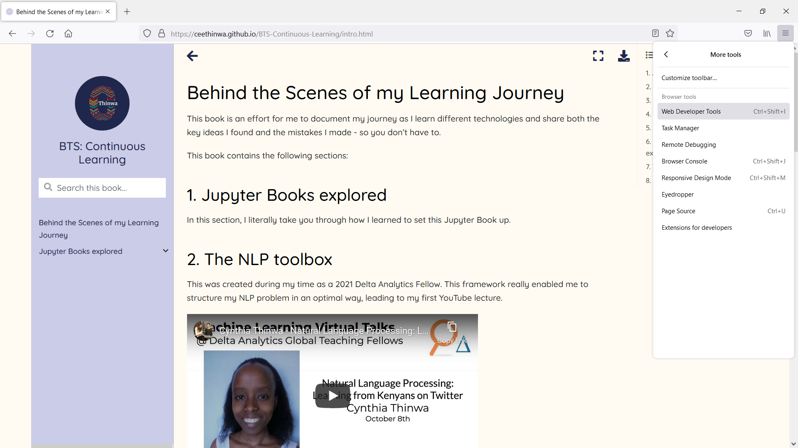
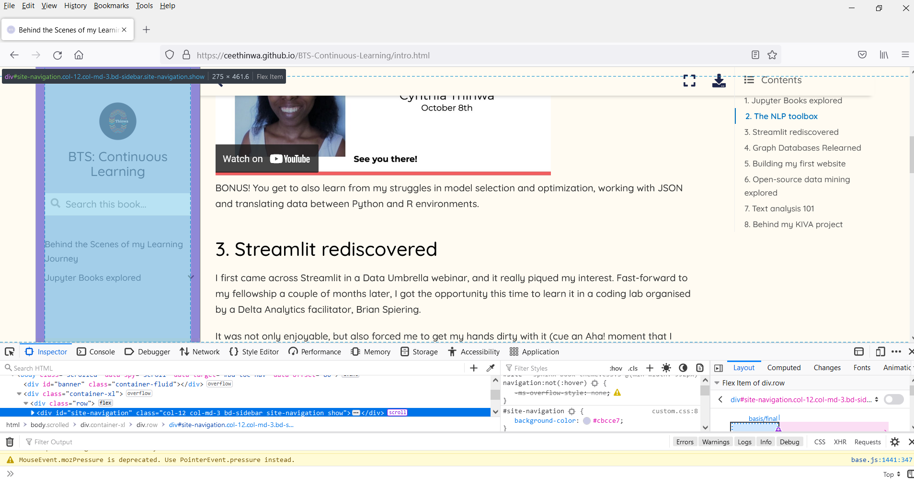

Customizing the Front End 🌼
Contents
Customizing the Front End 🌼¶
A brand identity is very important because it makes your communications look and feel consistent across all digital and offline channels. It allows people to know that a particular person made any given piece of content.
The next logical step after creating a newly minted notebook is to customize it and make it yours.
How?
1. Through css¶
Through css of course! Jupyter Book allows for
tweaking css though a custom.css file created in the
_static folder. The _static folder sits in the main
repository alongside the _build folder.
It took quite a lot of work because I had to use the Web Developer tools that can be found in most browsers and look for the relevant elements and classes that I could modify.
My brand identity for the education portion of my website can be summarized as follows:
Brand attribute |
Value |
|---|---|
Font |
Quicksand |
Colour 1 - lavender |
#cbcce7 |
Colour 2 - dark blue |
#1f274c |
Colour 3 - cream |
#fffbf2 |
Once the codes are in place, the next step is to access the css code that can be copied for modification purposes.
For instance, if I wanted to change the background for the
navigation panel that also shows the table of contents, I would
first access the Web Developer tools (I prefer Firefox)
by navigating first to the right-hand menu, naviagting to More Tools, then navigating to Web Developer Tools resulting in:

To inspect the css code influencing the color of the navigation bar, I click the code inside the inspector; this highlights the html code a solid blue and colours the corresponding area of the web page a more transparent blue like so:

Based on the visual, the div representing it has a
#site-navigation id, with the current color. So to change it
to white (hex code #fff), I would create the following code in
custom.css:
#site-navigation {background-color: #fff;}
With enough time and patience, I was able to customize it into the book you are now browsing.
Through emojis!¶
You can also use emojis in your markdown by
referencing the relevant decimal/hexadecimal code (a list can be found here), or
In this case, How cool is
✨+✨becomes How cool is ✨ + ✨
directly pasting it into the markdown before running the
buildcommand.In this case, we directly get How cool is that ✨!